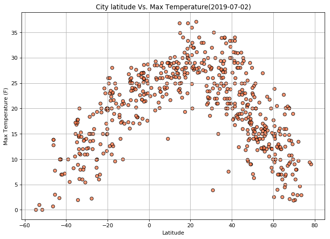

Summary: Latitude vs. X

The purpose of this project was to visualize weather as you get closer to the equator. To accomplish this we pulled weather data for 500 cities around the world from Openweather API.
After assembling the data set we used Matplotlib to plot various aspects of weather vs latitude.
Factors we looked at were: temperature, cloudiness, precipitation, wind speed and humidity.
This site provides source data visualization and also analysis and correlations.